대기환경기사 (2020-06-06 기출문제)
1과목: 대기오염 개론
1. 전기자동차의 일반적 특성으로 가장 거리가 먼 것은?
- 내연기관에 비해 소음과 진동이 적다.
- CO2나 NOX를 배출하지 않는다.
- 충전 시간이 오래 걸리는 편이다.
- 대형차에 잘 맞으며, 자동차 수명보다 전지 수명이 길다.
(정답률: 86%)

2. 디젤 자동차의 배출가스 후처리기술로 옳지 않은 것은?
- 매연여과장치
- 습식흡수방법
- 산화 촉매방지
- 선택적 촉매환원
(정답률: 60%)
3. Panofsky에 의한 리차드슨 수(Ri)의 크기와 대기의 혼합간의 관계에 관한 설명으로 옳지 않은 것은?
- Ri=0 : 수직방향의 혼합이 없다.
- 0＜Ri＜0.25 : 성층에 의해 약화된 기계적 난류가 존재한다.
- Ri＜-0.04 : 대류에 의한 혼합이 기계적 혼합을 지배한다.
- -0.03＜Ri＜0 : 기계적 난류와 대류가 존재하나 기계적 난류가 혼합을 주로 일으킨다.
(정답률: 69%)
4. 도시 대기오염물질의 광화학반응에 관한 설명으로 옳지 않은 것은?
- O3는 파장 200∼320nm에서 강한 흡수가, 450∼700nm에서는 약한 흡수가 일어난다.
- PAN은 알데히드의 생성과 동시에 생기기 시작하며, 일반적으로 오존농도와는 관계가 없다.
- NO2는 도시 대기오염물질 중에서 가장 중요한 태양빛 흡수 기체로서 파장 420nm 이상의 가시광선에 의하여 NO와 O로 광분해한다.
- SO3는 대기 중의 수분과 쉽게 반응하여 황산을 생성하고 수분을 더 흡수하여 중요한 대기오염물질의 하나인 황산입자 또는 황산미스트를 생성한다.
(정답률: 67%)
5. LA 스모그에 관한 설명으로 옳지 않은 것은?
- 광화학적 산화반응으로 발생한다.
- 주 오염원은 자동차 배기가스이다.
- 주로 새벽이나 초저녁에 자주 발생한다.
- 기온이 24℃ 이상이고 습도가 70% 이하로 낮은 상태일 때 잘 발생한다.
(정답률: 77%)
6. 다음 중 주로 연소 시 배출되는 무색의 기체로 물에 매우 난용성이며, 혈액 중의 헤모글로빈과 결합력이 강해 산소 운반능력을 감소시키는 물질은?
- HC
- NO
- PAN
- 알데히드
(정답률: 80%)
7. 열섬효과에 관한 설명으로 옳지 않은 것은?
- 열섬현상은 고기압의 영향으로 하늘이 맑고 바람이 약한 때에 잘 발생한다.
- 열섬효과로 도시주위의 시골에서 도시로 바람이 부는데, 이를 전원풍이라 한다.
- 도시의 지표면은 시골보다 열용량이 적고 열전도율이 높아 열섬효과의 원인이 된다.
- 도시에서는 인구와 산업의 밀집지대로서 인공적인 열이 시골에 비하여 월등하게 많이 공급된다.
(정답률: 78%)
8. 실내공기 오염물질인 라돈에 관한 설명으로 가장 거리가 먼 것은?
- 무색, 무취의 기체로 액화되어도 색을 띠지 않는 물질이다.
- 반감기는 3.8일로 라듐이 핵분열 할 때 생성되는 물질이다.
- 자연계에 널리 존재하며, 건축자재 등을 통하여 인체에 영향을 미치고 있다.
- 주기율표에서 원자번호가 238번으로, 화학적으로 활성이 큰 물질이며, 흙속에서 방사선 붕괴를 일으킨다.
(정답률: 77%)
9. 실제 굴뚝 높이가 50m, 굴뚝내경 5m, 배출가스의 분출가스가 12m/s, 굴뚝주위의 풍속이 4m/s라고 할 때, 유효굴뚝의 높이(m)는? (단,
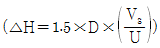
이다.)- 22.5
- 27.5
- 72.5
- 82.5
(정답률: 61%)
10. 다음 보기가 설명하는 오염물질로 옳은 것은?
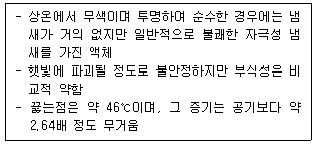
- COCl2
- Br2
- SO2
- CS2
(정답률: 71%)
11. 대기 중 각 오염원의 영향평가를 해결하기 위한 수용모델에 관한 설명으로 옳지 않은 것은?
- 지형, 기상학적 정보 없이도 사용 가능하다.
- 수용체 입장에서 영향평가가 현실적으로 이루어 질 수 있다.
- 오염원의 조업 및 운영 상태에 관한 정보 없이도 사용 가능하다.
- 측정 자료를 입력 자료로 사용하므로 배출원 조건의 시나리오 작성이 용이하다.
(정답률: 68%)
12. 산성비가 토양에 미치는 영향에 관한 설명으로 옳지 않은 것은?
- Al3+은 뿌리의 세포분열이나 Ca 또는 P의 흡수나 흐름을 저해한다.
- 교환성 Al은 산성의 토양에만 존재하는 물질이고, 교환성 H와 함께 토양 산성화의 주요한 요인이 된다.
- 토양의 양이온 교환기는 강산적 성격을 갖는 부분과 약산적 성격을 갖는 부분으로 나누는데, 결정도가 낮은 점토광물은 강산적이다.
- 산성강수가 가해지면 토양은 산적 성격이 약한 교환기부터 순서적으로 Ca2+, Mg2+, Na+, K+ 등의 교환성 염기를 방출하고, 대신 그 교환 자리에 H+가 흡착되어 치환된다.
(정답률: 64%)
13. 다음 중 2차 오염물질(secondary pollutants)은?
- SiO2
- N2O3
- NaCl
- NOCl
(정답률: 65%)
14. 다음 오염물질 중 온실효과를 유발하는 것으로 가장 거리가 먼 것은?
- 메탄
- CFCs
- 이산화탄소
- 아황산가스
(정답률: 70%)
15. 대기오염사건과 대표적인 주 원인물질 또는 전구물질의 연결이 옳지 않은 것은?
- 뮤즈계곡 사건- SO2
- 도노라 사건- NO2
- 런던 스모그 사건- SO2
- 보팔 사건- MIC(Methyl Isocyanate)
(정답률: 76%)
16. 지름이 1.0μm이고 밀도가 106g/m3인 물방울이 공기중에서 지표로 자유낙하 할 때 Reynolds 수는? (단, 공기의 점도는 0.0172g/m·s, 밀도는 1.29kg/m3이다.)
- 1.9×10-6
- 2.4×10-6
- 1.9×10-5
- 2.4×10-5
(정답률: 46%)
17. 20℃, 750mmHg에서 측정한 NO의 농도가 0.5ppm이다. 이 때 NO의 농도(μg/Sm3)는?
- 약 463
- 약 524
- 약 553
- 약 616
(정답률: 46%)
18. 대기 중에 존재하는 가스상 오염물질 중 염화수소와 염소에 관한 설명으로 옳지 않은 것은?
- 염소는 강한 산화력을 이용하여 살균제, 표백제로 쓰인다.
- 염화수소가 대기중에 노출될 경우 백색의 연무를 형성하기도 한다.
- 염소는 상온에서 적갈색을 띄는 액체로 휘발성과 부식성이 강하다.
- 염화수소는 무색으로서 자극성 냄새가 있으며 상온에서 기체이다. 전지, 약품, 비료 등에 사용된다.
(정답률: 72%)
19. 대기압력이 900mb인 높이에서의 온도가 25℃일 때 온위(potential temperature, K)는? (단, θ=T(1000/P)0.288)
- 307.2
- 377.8
- 421.4
- 487.5
(정답률: 72%)
20. 대기오염원의 영향을 평가하는 방법 중 분산모델에 관한 설명으로 가장 거리가 먼 것은?
- 오염물의 단기간 분석 시 문제가 된다.
- 지형 및 오염원의 조업조건에 영향을 받는다.
- 먼지의 영향평가는 기상의 불확실성과 오염원이 미확인인 경우에 문제점을 가진다.
- 현재나 과거에 일어났던 일을 추정, 미래를 위한 전략은 세울수 있으나 미래 예측은 어렵다.
(정답률: 76%)
2과목: 연소공학
21. 액체연료 연소장치 중 건타입(Gun type)버너에 관한 설명으로 옳지 않은 것은?
- 유압은 보통 7kg/cm2 이상 이다.
- 연소가 양호하고 전자동 연소가 가능하다.
- 형식은 유압식과 공기분무식을 합한 것이다.
- 유량조절 범위가 넓어 대형 연속에 사용한다.
(정답률: 71%)
22. 기체연료의 특징 및 종류에 관한 설명으로 옳지 않은 것은?
- 부하의 변동범위가 넓고 연소의 조절이 용이한 편이다.
- 천연가스는 화염전파속도가 크며, 폭발범위가 크므로 1차 공기를 적게 혼합하는 편이 유리하다.
- 액화전연가스는 메탄을 주성분으로 하는 천연가스를 1기압 하에서 -168℃ 근처에서 냉각, 액화시켜 대량수송 및 저장을 가능하게 한 것이다.
- 액화석유가스는 액체에서 기체로 될 때 증발열(90∼100kcal/kg)이 있으므로 사용하는데 유의할 필요가 있다.
(정답률: 57%)
23. 액체연료의 특징으로 옳지 않은 것은?
- 저장 및 계량, 운반이 용이하다.
- 점화, 소화 및 연소의 조절이 쉽다.
- 발열량이 높고 품질이 대체로 일정하며 효율이 높다.
- 소량의 공기로 완전 연소되며 검댕발생이 없다.
(정답률: 70%)
24. 어떤 물질의 1차 반응에서 반감기가 10분이었다. 반응물이 1/10 농도로 감소할 때까지 얼마의 시간(분)이 걸리겠는가?(오류 신고가 접수된 문제입니다. 반드시 정답과 해설을 확인하시기 바랍니다.)
- 6.9
- 33.2
- 693
- 3323
(정답률: 70%)
25. 다음 기체연료 중 고위발열량(kcal/Sm3)이 가장 낮은 것은?
- Ethane
- Ethylene
- Acetylene
- Methane
(정답률: 67%)
26. 유류연소버너 중 유압식 버너에 관한 설명으로 가장 거리가 먼 것은?
- 대용량 버너 제작이 용이하다.
- 유압은 보통 50∼90kg/cm2 정도이다.
- 유량 조절 범위가 좁아 (환류식 1:3, 비환류식 1:2) 부하변동에 적응하기 어렵다.
- 연료유의 분사각도는 기름의 압력, 점도 등으로 약간 달라지지만 40∼90° 정도의 넓은 각도로 할 수 있다.
(정답률: 49%)
27. 액화석유가스에 관한 설명으로 옳지 않은 것은?
- 저장설비비가 많이 든다.
- 황분이 적고 독성이 없다.
- 비중이 공기보다 가볍고, 누출될 경우 쉽게 인화 폭발될 수 있다.
- 유지 등을 잘 녹이기 때문에 고무 패킹이나 유지로 된 도포제로 누출을 막는 것은 어렵다.
(정답률: 73%)
28. 기체 연료의 연소방식 중 확산연소에 관한 설명으로 옳지 않은 것은?
- 역화의 위험성이 없다.
- 붉고 긴 화염을 만든다.
- 가스와 공기를 예열할 수 없다.
- 연료의 분출속도가 클 경우에는 그을음이 발생하기 쉽다.
(정답률: 55%)
29. 다음 연소장치 중 일반적으로 가장 큰 공기비를 필요로 하는 것은?
- 오일버너
- 가스버너
- 미분탄버너
- 수평자동화격자
(정답률: 57%)
30. 프로판과 부탄이 용적비 3:2로 혼합된 가스 1Sm3가 이론적으로 완전연소 할 때 발생하는 CO2의 양(Sm3)은?
- 2.7
- 3.2
- 3.4
- 4.1
(정답률: 56%)
31. 연소시 매연 발생량이 가장 적은 탄화수소는?
- 나프텐계
- 올레핀계
- 방향족계
- 파라핀계
(정답률: 59%)
32. C 80%, H 20%로 구성된 액체 탄화수소의 연료 1kg을 완전연소 시킬 때 발생하는 CO2의 부피 (Sm3)는?
- 1.2
- 1.5
- 2.6
- 2.9
(정답률: 48%)
33. 저위발열량이 5000kcal/Sm3인 기체연료의 이론 연소온도(℃)는 약 얼마인가? (단, 이론연소가스량 15Sm3/Sm3, 연료연소가스의 평균정압 비열 0.35kcal/Sm3·℃, 기준온도는 0℃, 공기는 예열되지 않으며, 연소가스는 해리되지 않는다고 본다.)
- 952
- 994
- 1008
- 1118
(정답률: 62%)
34. 프로판 2kg을 과잉공기계수 1.31로 완전 연소시킬 때 발생하는 습연소가스량(kg)은?
- 약 24
- 약 32
- 약 38
- 약 43
(정답률: 29%)
35. 착화온도(발화점)에 대한 특성으로 옳지 않은 것은?
- 분자구조가 복잡할수록 착화온도는 낮아진다.
- 산소농도가 낮을수록 착화온도는 낮아진다.
- 발열량이 클수록 착화온도는 낮아진다.
- 화학 반응성이 클수록 착화온도는 낮아진다.
(정답률: 64%)
36. S 함량 3%의 벙커 C유 100kL를 사용하는 보일러에 S 함량 1%인 벙커 C유로 30% 섞어 사용하면, SO2 배출량은 몇 % 감소하는가?（단, 벙커 C유 비중 0.95, 벙커 C유 함유 S는 모두 SO2로 전환된다.)
- 16
- 20
- 25
- 28
(정답률: 53%)
37. 옥탄(C8H18)을 완전연소 시킬 때의 AFR(Air Fuel Ratio)은? (단, 무게비 기준으로 한다.)
- 15.1
- 30.8
- 45.3
- 59.5
(정답률: 49%)
38. 황화수소의 연소반응식이 다음 보기와 같을 때 황화수소 1Sm3의 이론연소공기량(Sm3)은?
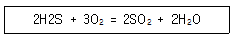
- 5.54
- 6.42
- 7.14
- 8.92
(정답률: 59%)
39. 어떤 액체연료를 보일러에서 완전연소시켜 그 배출가스를 Orsat 분석 장치로서 분석하여 CO2 15%, O2 5%의 결과를 얻었다면 이때 과잉공기계수는? (단, 일산화탄소 발생량은 없다.)
- 1.12
- 1.19
- 1.25
- 1.31
(정답률: 51%)
40. 다음 연소의 종류 중 흑연, 코크스, 목탄 등과 같이 대부분 탄소만으로 되어있는 고체연료에서 관찰되는 연소형태는?
- 표면연소
- 내부연소
- 증발연소
- 자기연소
(정답률: 78%)
3과목: 대기오염 방지기술
41. 중력침전을 결정하는 중요 매개변수는 먼지입자의 침전속도이다. 다음 중 먼지의 침전속도 결정과 가장 관계가 깊은 것은?
- 입자의 온도
- 대기의 분압
- 입자의 유해성
- 입자의 크기와 밀도
(정답률: 73%)
42. 처리가스량 25420 m3/h, 압력손실이 100mmH2O인 집진장치의 송풍기 소요동력(kW)은 약 얼마인가? (단, 송풍기 효율은 60%, 여유율율은 1.3이다.)
- 9
- 12
- 15
- 18
(정답률: 55%)
43. 다음은 활성탄의 고온 활성화 재생방법으로 적용될 수 있는 다단로(multi-hearth furnace)와 회전로(rotary kiln)의 비교표이다. 비교 내용 중 옳지 않은 것은?
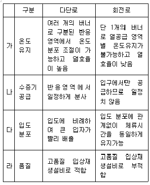
- 가
- 나
- 다
- 라
(정답률: 67%)
44. 다음 악취물질 중 공기 중의 최소 감지 농도가 가장 낮은 것은?
- 염소
- 암모니아
- 황화수소
- 이황화탄소
(정답률: 54%)
45. 환기 및 후드에 관한 설명으로 옳지 않은 것은?
- 폭이 넓은 오염원 탱크에서는 주로 ‘밀고 당기는(push/pull)’ 방식의 환기공정이 요구된다.
- 후드는 일반적으로 개구면적을 좁게 하여 흡인속도를 크게 하고, 필요시 에어커튼을 이용한다.
- 폭이 좁고 긴 직사각형의 슬로트후드(slot hood)는 전기도금공정과 같은 상부개방형 탱크에서 방출되는 유해물질을 포집하는데 효율적으로 이용된다.
- 천개형후드는 포착형보다 유입 공기의 속도가 빠를 때 사용되며 주로 저온의 오염공기를 배출하고 과잉습도를 제거할 때 제한적으로 사용된다.
(정답률: 57%)
46. 접선유입식 원심력 집진장치의 특징에 관한 설명 중 옳은 것은?
- 장치의 압력손실은 5000mmH2O 이다.
- 장치 입구의 가스속도는 18∼20 cm/s 이다.
- 유입구 모양에 따라 나선형과 와류형으로 분류된다.
- 도익선회식이라고도 하며 반전형과 직진형이 있다.
(정답률: 58%)
47. A집진장치의 입구 및 출구의 배출가스 중 먼지의 농도가 각각 15g/Sm3, 150mg/Sm3이었다. 또한 입구 및 출구에서 채취한 먼지시료중에 포함된 0∼5μm의 입경분포의 중량 백분율이 각각 10%, 60%이었다면 이 집진장치의 0∼5μm의 입경범위의 먼지시료에 대한 부분집진율(%)은?
- 90
- 92
- 94
- 96
(정답률: 52%)
48. 직경이 D인 구형입자의 비교면적(Sv, m2/m3)에 관한 설명으로 옳지 않은 것은? (단, p는 구형입자의 밀도이다.
- Sv=3p/D 로 나타낸다.
- 입자가 미세할수록 부착성이 커진다.
- 먼지의 입경과 비교면적은 반비례 관계이다.
- 비교면적이 크게 되면 원심력 집진장치의 경우에는 장치벽면을 폐색시킨다.
(정답률: 60%)
49. 염소농도 0.2%인 굴뚝 배출가스 3000Sm3/h를 수산화칼슘용액을 이용하여 염소를 제거하고자 할 떄, 이론적으로 필요한 시간당 수산화칼슘의 양 (kg/h)은? (단, 처리효율은 100%로 가정한다.)
- 16.7
- 18.2
- 19.8
- 23.1
(정답률: 41%)
50. 헨리의 법칙에 관한 설명으로 옳지 않은 것은?
- 비교적 용해도가 적은 기체에 적용된다.
- 헨리상수의 단위는 atm/m3·kmol 이다.
- 헨리상수의 값은 온도가 높을수록, 용해도가 적을수록 커진다.
- 온도와 기체의 부피가 일정할 떄 기체의 용해도는 용매와 평형을 이루고 있는 기체의 분압에 비례한다.
(정답률: 55%)
51. 탈취방법 중 촉매연소법에 관한 설명으로 옳지 않은 것은?
- 직접연소법에 비해 질소산화물의 발생량이 높고, 고농도로 배출된다.
- 직접연소법에 비해 연료소비량이 적어 운전비는 절감되나, 촉매독이 문제가 된다.
- 적용 가능한 악취성분은 가연성 악취성분, 황화수소, 암모니아 등이 있다.
- 촉매는 백금, 코발트, 니켈 등이 있으며 고가이지만 성능이 우수한 백금계의 것이 많이 이용된다.
(정답률: 59%)
52. 다음은 물리흡착과 화학흡착의 비교표이다. 비교 내용 중 옳지 않은 것은?
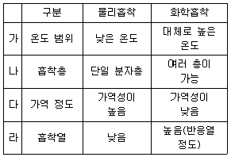
- 가
- 나
- 다
- 라
(정답률: 64%)
53. 벤츄리스크러버의 액가스비를 크게 하는 요인으로 가장 거리가 먼 것은?
- 먼지의 농도가 높을 때
- 처리가스의 온도가 높을 때
- 먼지 입자의 친수성이 클 때
- 먼지 입자의 점착성이 클 때
(정답률: 70%)
54. 다음 중 유해물질 처리방법으로 가장 거리가 먼 것은?
- CO는 백금계의 촉매를 사용하여 연소시켜 제거한다.
- Br2는 산성수용액에 의한 선정법으로 제거한다.
- 이황화탄소는 암모니아를 불어넣는 방법으로 제거한다.
- 아크로레인은 NaClO 등의 산화제를 혼입한 가성소다 용액으로 흡수 제거한다.
(정답률: 53%)
55. 80%의 효율로 제진하는 전기집진장치의 집진면적을 2배로 증가시키면 집진효율(%)은 얼마로 향상되는가?
- 92
- 94
- 96
- 98
(정답률: 50%)
56. 굴뚝 배출 가스량은 2000Sm3/h, 이 배출가스 중 HF 농도는 500mL/Sm3이다. 이 배출가스를 50m3의 물로 세정할 때 24시간 후 순환수인 폐수의 pH는 ? (단, HF는 100% 전리되며, HF 이외의 영향은 무시한다.)
- 약 1.3
- 약 1.7
- 약 2.1
- 약 2.6
(정답률: 33%)
57. 먼지의 입경분포에 관한 설명으로 옳지 않은 것은?
- 대수정규분포는 미세한 입자의 특성과 잘 일치한다.
- 빈도분포는 먼지의 입경분포를 적당한 입경간격의 개수 또는 질량의 비율로 나타내는 방법이다.
- 먼지의 입경분포를 나타내는 방법 중 적산분포에는 정규분포, 대수정규분포, Rosin Rammler 분포가 있다.
- 적산분포(R)는 일정한 입경보다 큰 입자가 전체의 입자에 대하여 몇 % 있는가를 나타내는 것으로 입경분포가 0 이면 R=100% 이다.
(정답률: 38%)
58. 싸이클론의 원추부 높이가 1.4m, 유입구 높이가 15cm, 원통부 높이가 1.4m 일 때 외부선회류의 회전수는? (단,
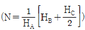
)- 6회
- 11회
- 14회
- 18회
(정답률: 61%)
59. 세정집진장치의 특징으로 옳지 않은 것은?
- 압력손실이 작아 운전비가 적게 든다.
- 소수성 입자의 집진율이 낮은 편이다.
- 점착성 및 조해성 분진의 처리가 가능하다.
- 연소성 및 폭발성 가스의 처리가 가능하다.
(정답률: 51%)
60. 국소배기시설에서 후드의 유입계수가 0.84, 속도압이 10mmH2O 일 때 후드에서의 압력손실(mmH2O)은?
- 4.2
- 8.4
- 16.8
- 33.6
(정답률: 32%)
4과목: 대기오염 공정시험기준(방법)
61. 배출가스 중 질소산화물 농도 측정방법으로 옳지 않은 것은?
- 화학발광법
- 자외선형광법
- 적외선 흡수법
- 아연환원 나프틸에틸렌다이아민법
(정답률: 46%)
62. 적정법에 의한 배출가스 중 브롬화합물의 정량 시 과잉의 하이포아염소산염을 환원시키는데 사용하는 것은?
- 염산
- 폼산소듐
- 수산화소듐
- 암모니아수
(정답률: 37%)
63. 화학반응 공정 등에서 배출되는 굴뚝 배출가스 중 일산화탄소 분석방법에 따른 정량범위로 틀린 것은?
- 정전위전해법 : 0∼200ppm
- 비분산형적외선분석법 : 0∼1000ppm
- 기체크로마토그래피 : TCD의 경우 0.1% 이상
- 기체크로마토그래피: FID의 경우 0∼2000ppm
(정답률: 40%)
64. 액의 농도에 관한 설명으로 옳지 않은 것은?
- 단순히 용액이라 기재하고 그 용액의 이름을 밝히지 않은 것은 수용액을 뜻한다.
- 혼액(1+2)은 액체상의 성분을 각각 1용량 대 2용량의 비율로 혼합한 것을 뜻한다.
- 황산(1:7)은 용질이 액체일 때 1mL를 용매에 녹여 전량을 7mL로 하는 것을 뜻한다.
- 액의 농도를 (1→5)로 표시한 것은 그 용질의 성분이 고체일 때는 1g을 용매에 녹여 전량을 5mL로 하는 비율을 말한다.
(정답률: 67%)
65. 대기오염공정시험기준상 비분산적외선분광분석법에서 응답시간에 관한 설명이다. ( )안에 알맞은 것은?
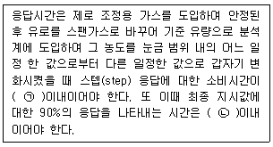
- ㉠ 1초, ㉡ 1분
- ㉠ 1초, ㉡ 40초
- ㉠ 10초, ㉡ 1분
- ㉠ 10초, ㉡ 40초
(정답률: 54%)
66. 대기 및 굴뚝 배출 기체중의 오염물질을 연속적으로 측정하는 비분산 정필터형 적외선 가스 분석계(고정형)의 성능 유지조건에 대한 설명으로 옳은 것은?
- 최대눈금 범위의 ±5% 이하에 해당하는 농도변화를 검출할 수 있는 감도를 지녀야 한다.
- 측정가스의 유량이 표시한 기준유량에 대하여 ±10% 이내에서 변동하여도 성능에 지장이 있어서는 안된다.
- 동일 조건에서 제로가스를 연속적으로 도입하여 24시간 연속 측정하는 동안 전체눈금의 ±5% 이상의 지시변화가 없어야 한다.
- 전압변동에 대한 안정성 측면에서 전원전압이 설정 전압의 ±10% 이내로 변화하였을 때 지시값 변화는 전체눈금의 ±1% 이내이어야 한다.
(정답률: 44%)
67. 굴뚝 배출가스 유속을 피토우관으로 측정한 결과가 다음과 같을 때 배출가스 유속(m/s)는?
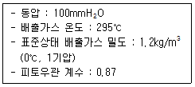
- 43.7
- 48.2
- 50.7
- 54.3
(정답률: 47%)
68. 기체크로마토그래피의 장치구성에 관한 설명으로 옳지 않은 것은?
- 분리관유로는 시료도입부, 분리관, 검출기기배관으로 구성되며, 배관의 재료는 스테인레스강이나 유리 등 부식에 대한 저항이 큰 것이어야 한다.
- 분리관(column)은 충전물질을 채운 내경 2mm∼7mmm의 시료에 대하여 불활성금속, 유리 또는 합성수지관으로 각 분석방법에서 규정하는 것을 사용한다.
- 운반가스는 일반적으로 열전도도형 검출기(TCD)에서는 순도 99.8% 이상의 아르곤이나 질소를, 수소염 이온화 검출기(FID)에서는 순도 99.8% 이상의 수소를 사용한다.
- 주사기를 사용하는 시료도입부는 실리콘고무와 같은 내열성 탄성체격막이 있는 시료 기화실로서 분리관온도와 동일하거나 또는 그 이상의 온도를 유지할 수 있는 가열기구가 갖추어져야 한다.
(정답률: 55%)
69. 배출가스 중 가스상 물질의 시료 채취방법 중 다음 분석물질별 흡수액과의 연결이 옳지 않은 것은?(문제 오류로 가답안 발표시 3번으로 발표되었지만 최종정답 발표시 2, 3번이 정답 처리 되었습니다. 여기서는 가답안인 3번을 누르면 정답 처리 됩니다.)
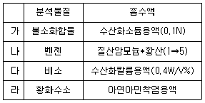
- 가
- 나
- 다
- 라
(정답률: 63%)
70. 다음 중 굴뚝에서 배출되는 가스의 유량을 측정하는 기기가 아닌 것은?
- 피토우관
- 열선 유속계
- 와류 유속계
- 위상차 유속계
(정답률: 47%)
71. 배출가스 중 암모니아를 인도페놀법으로 분석할 때 암모니아와 같은 양으로 공존하면 안 되는 물질은?
- 아민류
- 황화수소
- 아황산가스
- 이산화질소
(정답률: 39%)
72. 다음은 배출가스 중 입자상 아연화합물의 자외선가시선 분광법에 관한 설명이다. ( )안에 알맞은 것은?(관련 규정 개정전 문제로 여기서는 기존 정답인 2번을 누르면 정답 처리됩니다. 자세한 내용은 해설을 참고하세요.)
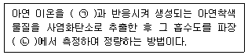
- ㉠ 디티존, ㉡ 460nm
- ㉠ 디티존, ㉡ 535nm
- ㉠ 디에틸디티오카바민산나트륨, ㉡ 460nm
- ㉠ 디에틸디티오카바민산나트륨, ㉡ 535nm
(정답률: 52%)
73. 대기오염공정시험기준상 원자흡수분광광도법 분석 장치 중 시료원자화장치에 관한 설명으로 옳지 않은 것은?
- 시료원자화장치 중 버너의 종류로 전분무버너와 예혼합버너가 있다.
- 내화성산화물을 만들기 쉬운 원소의 분석에 적당한 불꽃은 프로판-공기 불꽃이다.
- 빛이 투과하는 불꽃의 길이를 10cm 이상으로 해 주려면 멀티패스(Multi Path)방식을 사용한다.
- 분석의 감도를 높여주고 안정한 측정치를 얻기 위하여 불꽃중에 빛을 투과시킬 때 불꽃중에서의 유효길이를 되도록 길게 한다.
(정답률: 43%)
74. 배출허용기준 중 표준산소농도를 적용받는 항목에 대한 배출가스량 보정식으로 옳은 것은? (단, Q: 배출가스유량(Sm3/일), Qa: 실측배출가스유량(Sm3/일), Os : 표준산소농도(%), Oa : 실측산소농도(%))
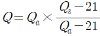
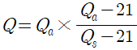
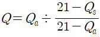
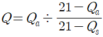
(정답률: 57%)
75. 공정시험방법상 환경대기중의 탄화수소 농도를 측정하기 위한 주시험법은?
- 총탄화수소 측정법
- 활성 탄화수소 측정법
- 비활성 탄화수소 측정법
- 비메탄 탄화수소 측정법
(정답률: 60%)
76. 대기오염공정시험기준상 분석시험에 있어 기재 및 용어에 관한 설명으로 옳은 것은?
- 시험조작중 “즉시”란 10초 이내에 표시된 조작을 하는 것을 뜻한다.
- “감압 또는 진공”이라 함은 따로 규정이 없는 한 10mmHg 이하를 뜻한다.
- 용액의 액성표시는 따로 규정이 없는 한 유리전극법에 의한 pH미터로 측정한 것을 뜻한다.
- “정확히 단다”라 함은 규정한 양의 검체를 취하여 분석용 저울로 0.3mg까지 다는 것을 뜻한다.
(정답률: 55%)
77. 굴뚝배출가스 중 수분량이 체적백분율로 10%이고, 배출가스의 온도는 80℃, 시료채취량은 10L, 대기압은 0.6기압, 가스미터 게이지압은 25mmHg, 가스미터온도 80℃에서의 수증기포화압이 255mmHg라 할 때, 흡수된 수분량(g)은?
- 0.15
- 0.21
- 0.33
- 0.46
(정답률: 35%)
78. 굴뚝배출가스 중 아황산가스의 자동연속 측정방법 중 자외선 흡수분석계에 관한 설명으로 옳지 않은 것은?
- 광원: 저압수소방전관 또는 저압수은등이 사용된다.
- 분광기: 프리즘 또는 회절격자분광기를 이용하여 자외선영역 또는 가시광선영역의 단색광을 얻는데 사용된다.
- 검출기: 자외선 및 가시광선에 감도가 좋은 광전자증배관 또는 광전관이 이용된다.
- 시료셀: 시료셀은 200∼500mm의 길이로 시료가스가 연속적으로 통과할 수 있는 구조로 되어 있다.
(정답률: 51%)
79. 배출가스 중 이황화탄소를 자외선가시선분광법으로 정량할 때 흡수액으로 옳은 것은?
- 아연아민착염 용액
- 제일염화주석 용액
- 다이에틸아민구리 용액
- 수산화제이철암모늄 용액
(정답률: 63%)
80. 원자흡광분석에서 발생하는 간섭 중 분석에 사용하는 스펙트럼의 불꽃 중에서 생성되는 목적원소의 원자증기 이외의 물질에 의하여 흡수되는 경우에 발생되는 것은?
- 물리적 간섭
- 화학적 간섭
- 분광학적 간섭
- 이온학적 간섭
(정답률: 60%)
5과목: 대기환경관계법규
81. 대기환경보전법령상 기본부과금 산정기준 중 “수산자원보호구역”의 지역별 부과계수는? (단, 지역구분은 국토의 계획 및 이용에 관한 법률에 의한다.)
- 0.5
- 1.0
- 1.5
- 2.0
(정답률: 40%)
82. 대기환경보전법규상 사업자는 자가측정 시 측정한 여과지 및 시료채취기록지는 환경오염공정시험기준에 따라 측정한 날부터 얼마동안 보존(기준)하여야 하는가?
- 2년
- 1년
- 6개월
- 3개월
(정답률: 62%)
83. 환경정책기본법령상 각 항목별 대기환경기준으로 옳지 않은 것은? (단, 기준치는 24시간 평균치이다.)
- 아황산가스(SO2) : 0.⑤ppm 이하
- 이산화질소(NO2) : 0.06ppm 이하
- 오존(O3) : 0.06ppm 이하
- 미세먼지(PM-10) : 100μg/m3 이하
(정답률: 52%)
84. 대기환경보전법령상 초과부과금의 부과대상이 되는 오염물질이 아닌 것은?
- 황산화물
- 염화수소
- 황화수소
- 페놀
(정답률: 58%)
85. 실내공기질 관리법규상 “영화상영관”의 실내공기질 유지기준(μg/m3)은? (단, 항목은 미세먼지 (PM-10)(μg/m3)이다.)
- 10 이하
- 100 이하
- 150 이하
- 200 이하
(정답률: 52%)
86. 대기환경보전법규상 한국환경공단이 환경부장관에게 행하는 위탁업무 보고사항 중 “자동차배출가스 인증생략 현황”의 보고 횟수 기준은?
- 수시
- 연 1회
- 연 2회
- 연 4회
(정답률: 55%)
87. 대기환경보전법규상 수도권대기환경청장, 국립환경과학원장 또는 한국환경공단이 설치하는 대기오염 측정망에 해당하는 것은?
- 도시지역의 휘발성유기화합물 등의 농도를 측정하기 위한 광화학대기오염물질측정망
- 도시지역의 대기오염물질 농도를 측정하기 위한 도시대기측정망
- 도로변의 대기오염물질 농도를 측정하기 위한 도로변대기측정망
- 대기 중의 중금속 농도를 측정하기 위한 대기중금속측정망
(정답률: 53%)
88. 악취방지법상 악취검사를 위한 관계 공무원의 출입·채취 및 검사를 거부 또는 방해하거나 기피한 자에 대한 벌칙기준은?
- 100만원 이하의 벌금
- 200만원 이하의 벌금
- 300만원 이하의 벌금
- 1000만원 이하의 벌금
(정답률: 50%)
89. 다음은 대기환경보전법령상 시·도지사가 배출시설의 설치를 제한할 수 있는 경우이다. ( )안에 알맞은 것은?
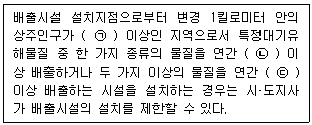
- ㉠ 2만명, ㉡ 10톤, ㉢ 25톤
- ㉠ 2만명, ㉡ 5톤, ㉢ 15톤
- ㉠ 1만명, ㉡ 10톤, ㉢ 25톤
- ㉠ 1만명, ㉡ 5톤, ㉢ 15톤
(정답률: 68%)
90. 다음은 대기환경보전법규상 비산먼지 발생을 억제하기 위한 시설의 설치 및 필요한 조치에 관한 엄격한 기준이다. ( )안에 알맞은 것은?
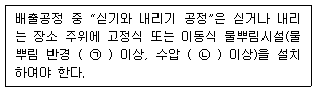
- ㉠ 3m, ㉡ 2kg/cm2
- ㉠ 3m, ㉡ 3kg/cm2
- ㉠ 5m, ㉡ 2kg/cm2
- ㉠ 7m, ㉡ 5kg/cm2
(정답률: 52%)
91. 실내공기질 관리법규상 “산후조리원”의 현행 실내공기질 권고기준으로 옳지 않은 것은?
- 라돈(Bq/m3) : 5.0 이하
- 이산화질소(ppm) : 0.⑤ 이하
- 총휘발성유기화합물(μg/m3) : 400 이하
- 곰팡이(CFU/m3) : 500 이하
(정답률: 53%)
92. 실내공기질 관리법규상 신축 공동주택의 오염물질 항목별 실내공기질 권고기준으로 옳지 않은 것은?
- 폼알데하이드 : 300μg/m3 이하
- 에틸벤젠 : 360μg/m3 이하
- 자일렌 : 700μg/m3 이하
- 벤젠 : 30μg/m3 이하
(정답률: 57%)
93. 다음은 대기환경보전법규상 미세먼지(PM-10)의 “주의보” 발령기준 및 해제기준이다. ( )안에 알맞은 것은?
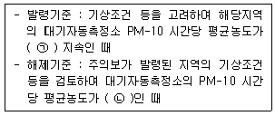
- ㉠ 150 μg/m3 이상 2시간 이상, ㉡ 100μg/m3미만
- ㉠ 150 μg/m3 이상 1시간 이상, ㉡ 150μg/m3미만
- ㉠ 100 μg/m3 이상 2시간 이상, ㉡ 100μg/m3미만
- ㉠ 100 μg/m3 이상 1시간 이상, ㉡ 80μg/m3미만
(정답률: 51%)
94. 다음은 대기환경보전법규상 고체연료 사용시설 설치기준 이다. ( )안에 가장 적합한 것은?
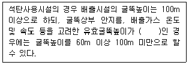
- 150 m 이상
- 220 m 이상
- 350 m 이상
- 440 m 이상
(정답률: 57%)
95. 대기환경보전법상 제작차배출허용기준에 맞지 아니하게 자동차를 제작한 자에 대한 벌칙기준은?
- 7년 이하의 징역이나 1억원 이하의 벌금에 처한다.
- 5년 이하의 징역이나 5천만원 이하의 벌금에 처한다.
- 3년 이하의 징역이나 3천만원 이하의 벌금에 처한다.
- 1년 이하의 징역이나 1천만원 이하의 벌금에 처한다.
(정답률: 67%)
96. 대기환경보전법령상 인증을 생략할 수 있는 자동차에 해당하지 않는 것은?
- 훈련용 자동차로서 문화체육관광부장관의 확인을 받은 자동차
- 주한 외국군인의 가족이 사용하기 위하여 반입하는 자동차
- 자동차제작자 및 자동차 관련 연구기관 등이 자동차의 개발 또는 전시 등 주행외의 목적으로 사용하기 위하여 수입하는 자동차
- 항공기 지상 조업용 자동차
(정답률: 49%)
97. 환경정책기본법령상 일산화탄소(CO)의 대기환경기준은? (단, 8시간 평균치이다.)
- 0.15ppm 이하
- 0.3ppm 이하
- 9ppm 이하
- 25ppm 이하
(정답률: 53%)
98. 다음은 대기환경보전법상 기존 휘발성유기화합물 배출시설 규제에 관한 사항이다. ( )안에 알맞은 것은?
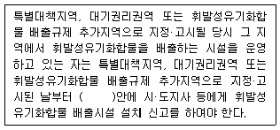
- 15일 이내
- 1개월 이내
- 2개월 이내
- 3개월 이내
(정답률: 28%)
99. 대기환경보전법령상 대기오염 경보단계의 3가지 유형 중 “경보발령” 시 조치사항으로 가장 거리가 먼 것은?
- 주민의 실외활동 제한요청
- 자동차 사용의 제한
- 사업장의 연료사용량 감축권고
- 사업장의 조업시간 단축명령
(정답률: 60%)
100. 대기환경보전법령상 대기오염물질발생량의 합계가 연간 25톤인 사업장은 몇 종 사업장에 해당하는가?
- 2종사업장
- 3종사업장
- 4종사업장
- 5종사업장
(정답률: 66%)